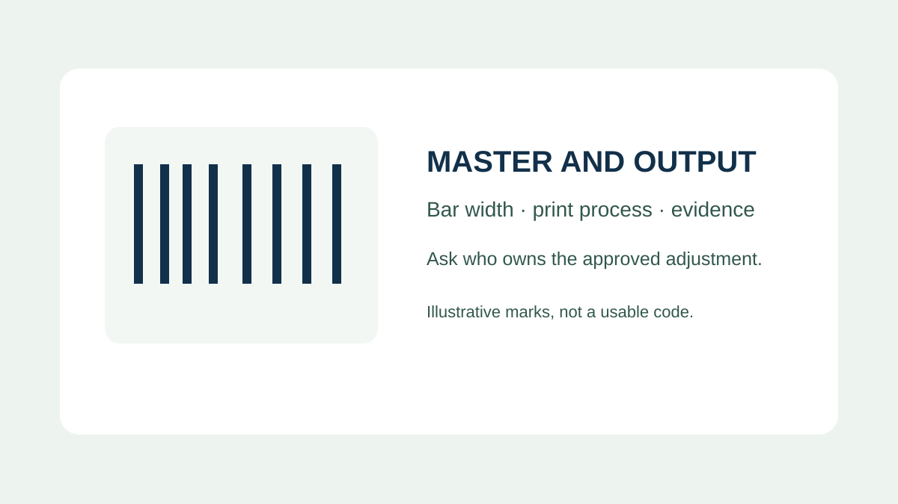
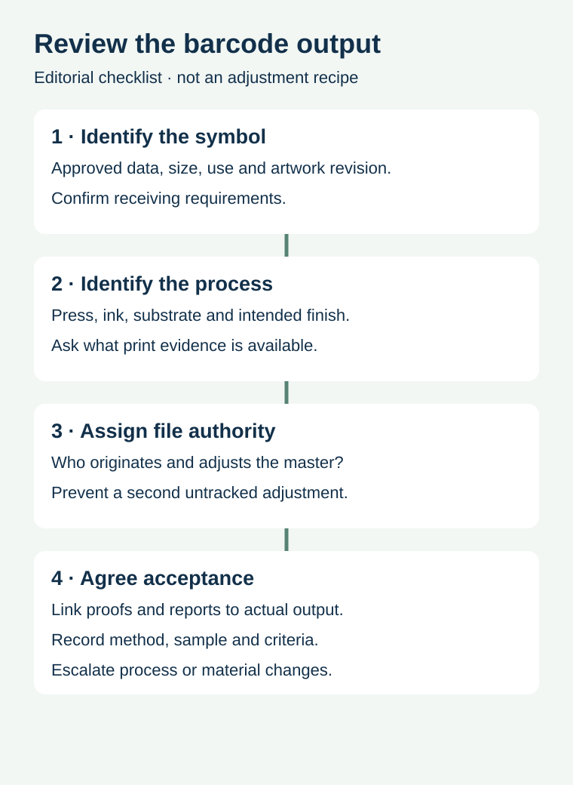

A barcode file looks sharp on screen, yet its printed bars may differ from the source. The person ordering food labels might hear that the printer will “reduce the bars” and assume that the barcode is being made smaller. Bar width adjustment is a process-specific production question, not a general instruction to shrink the symbol or redraw it by eye.
Identify the approved symbol and printing process, ask who controls the production master and adjustment, and require evidence appropriate to the actual output. Do not apply a generic compensation value to a new press or substrate.

What the adjustment is intended to address
Depending on the printing process and material, printed bars can differ in width from the master image. Barcode origination can compensate for anticipated print gain or loss. In its General Specifications, GS1 describes bar-width adjustment for EAN/UPC master images and connects it to a printability assessment, the process and the symbol's X-dimension. That discussion is not a universal percentage for every symbol or printer.
The approved data, complete symbol size, quiet zones and actual printed performance remain separate checks. A narrower source bar does not mean a buyer can reduce the whole symbol to fit crowded artwork. The barcode specialist must determine the applicable requirements for the symbol, use and output process.
Assign one owner for the production master


Before files move between a brand, designer, barcode provider and converter, identify which version is the approved data source and which party creates the press-ready master. Record whether an adjustment has already been applied and who is authorized to change it. Two well-intentioned parties applying separate undocumented changes can leave the output different from what either expected.
Ask the printer how the master is tied to the actual press, ink, substrate and print method. If the label will be overprinted later, distinguish the preprinted symbol from the code generated at the packing line. Different processes may require different evidence and owners. Do not modify an encoded barcode by stretching, outlining or redrawing its bars in a general graphics tool without the responsible specialist's approval.
| Handoff item | Record | Why it matters |
|---|---|---|
| Symbol | Approved type, data, intended size and receiving use | Defines what must be produced |
| Master file | File identity, creator, revision and adjustment owner | Avoids undocumented duplicate changes |
| Print conditions | Actual process, substrate, ink and finish | Sets the scope of process evidence |
| Proof and run | Samples, methods and relevant production identity | Distinguishes a proof from delivered labels |
| Acceptance | Applicable requirements, verification report and owner | Connects output to the receiving decision |
Do not transfer a value without its conditions
Imagine a hypothetical brand reorders a printed sauce label after the converter changes the substrate. The old job record includes a bar-width adjustment, but the label material and press conditions are different. The old value is useful history, not automatic proof that the same adjustment will produce the right result. Ask the converter and barcode provider what process evidence supports the new job and whether further checks are required.
A quoted adjustment without the symbol size, process and measurement context is not a complete purchase specification. Similarly, a vendor saying that a barcode “scans” may be describing a basic reader check rather than a measured quality report. Ask what was measured, on which sample, and against which applicable criteria.
Connect the proof to the finished output
A digital preview can reveal layout problems, but it does not reproduce the complete production process. A printed proof can be useful while still differing from the production press and material. GS1's specifications distinguish printability assessment, production checks and verification; the parties should agree an appropriate plan for the actual job and retain traceable sample identity.
The verification versus scanning guide covers the report-to-lot handoff. For final placement on a narrow container, use barcode orientation on curved packaging. For a later code added to preprinted labels, review the thermal overprint area separately.
Include the output details in the inquiry
Share the approved barcode file and data owner, required receiving environment, label size and construction, intended print process and any change from a previously approved job. Ask the converter and barcode specialist to define the production-master and verification responsibilities. Prepare a label specification inquiry; the contact page opens an email draft and lists email or WhatsApp for attachments. Actual supply and testing scope require confirmation.